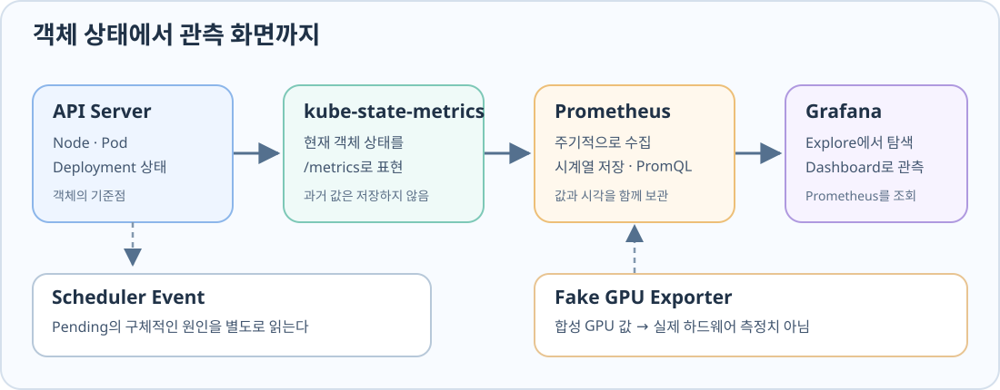

GPU 4개를 요청한 Pod가 Pending이다. GPU Worker 두 대가 각각 2개씩 게시하고 있어도, 한 Pod의 GPU 요청은 한 Node에서 충족해야 하므로 두 Node의 GPU를 합쳐 배치할 수는 없다. Node가 제공하는 양, Pod가 요청한 양, Scheduler가 보고한 상태를 따로 읽어야 한다. 여러 객체에서 이 숫자들을 계속 살펴보려면 Kubernetes 상태가 메트릭이 되는 경로가 필요하다.

Kubernetes 상태는 어떻게 숫자가 될까?
API Server는 Node의 자원량과 Pod의 요청·배치 상태를 보관한다. kube-state-metrics는 그 객체들을 읽어 이름과 Label이 있는 메트릭으로 /metrics에 노출한다. 이때 알 수 있는 것은 지금 Kubernetes가 어떤 상태라고 보고 있는가다.
예제에서 kube_node_status_allocatable은 Worker별 GPU 제공량 2, kube_pod_container_resource_requests는 대상 컨테이너의 GPU 요청량 4, kube_pod_status_phase{phase="Pending"}는 그 Pod의 Pending 상태 1을 표현한다. 메트릭 이름은 무엇을, Label은 누구의 값을, 마지막 숫자는 얼마인지를 알려준다. 세 숫자를 한 상황에 연결해 읽는 과정은 kube-state-metrics에서 GPU Pod 상태 읽기에서 이어진다.
Prometheus가 붙으면 무엇이 달라질까?
/metrics를 한 번 읽으면 현재 값을 알 수 있다. Prometheus는 그 값을 주기적으로 수집해 시각과 함께 보관한다. 이제 Pod가 언제부터 Pending이었는지, 배치 불가 상태가 얼마나 지속됐는지를 PromQL로 조회할 수 있다.
같은 방식으로 Deployment의 원하는 Replica 수와 Ready 수의 차이도 시간에 따라 볼 수 있다. Prometheus의 수집 경로와 실제 쿼리는 Prometheus에서 Kubernetes 상태 질의하기에서 이어진다.
Explore에서 메트릭을 탐색한다
상태를 좁혀 가는 동안에는 질문이 계속 바뀐다. Grafana Explore에서 Prometheus를 Data Source로 선택하고 up, Pod Phase, Replica 수, GPU 자원 메트릭을 차례로 조회하면 어떤 시계열이 있는지 살펴볼 수 있다. 이때 Instant는 한 시점의 값이고, 시간 범위 조회는 변화 과정을 보여준다. 결과가 비어 있는 것과 값이 0인 것도 다르다.
Dashboard에서 상태를 계속 본다
계속 지켜볼 질문이 정해지면 쿼리를 Dashboard 패널로 옮긴다. “지금 Pending Pod가 몇 개인가?”는 숫자 하나로, “GPU별 합성 사용률이 어떻게 표시되는가?”는 장치별 값으로 볼 수 있다. 쿼리 입력부터 패널 생성·저장, Instant와 시간 범위의 차이는 Grafana에서 Kubernetes 상태 읽기에서 다룬다.
상태 메트릭의 한계
Allocatable은 현재 남은 GPU 수가 아니라 Node가 제공한다고 게시한 양이고, resource_requests는 실제 GPU 사용률이 아니라 컨테이너가 요청한 양이다. Pending=1이나 unschedulable=1도 배치 실패 이유까지 말해주지는 않는다. Insufficient nvidia.com/gpu 같은 구체적인 Scheduler 판단은 Pod Event에서 읽는다.
Fake GPU 메트릭의 한계
Pod가 Running이고 Ready 조건이 참이어도 LLM 요청이 빠르다는 뜻은 아니다. Fake GPU Exporter가 내보내는 DCGM_FI_DEV_GPU_UTIL도 실제 하드웨어 사용률이 아니라 합성 값이다. 배치 상태와 실제 연산 성능은 서로 다른 관측 대상이다.
예제의 버전·Manifest·Dashboard JSON은 관측 환경과 설정 원문에 모았다.